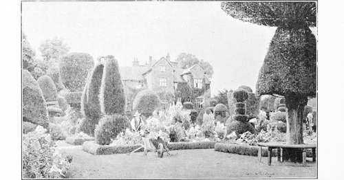
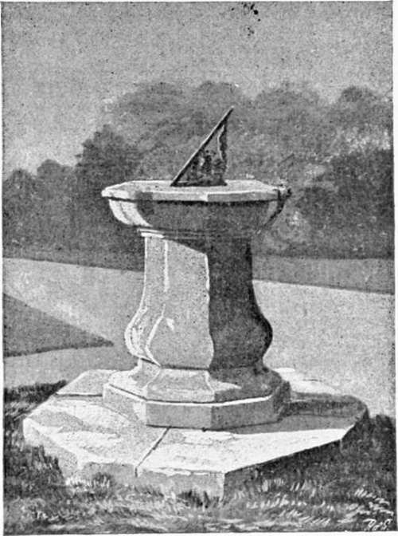

Seventeenth Century. Part 8
Description
This section is from the book "A History Of Gardening In England", by Alicia Amherst. Also available from Amazon: A History Of Gardening In England.
Seventeenth Century. Part 8
One good reason why it was in large gardens only that this style was adopted, was, that to carry out such vast ideas as those of Le Notre, space was required. The trees were planted in longer, larger, bolder avenues. There were wide paths and terraces, adorned with statues, and fountains and cascades. All French pictures of gardens show also numbers of seats, and arbours of stone, with a background of trellis-work, or closely-clipped trees, in the form of alcoves and arches. The semi-circular garden at Hampton Court was also laid out during the reign of Charles II. under the direction of Le Notre. He designed the avenues, and the canals which were " near completed" in 1662. The gardens were somewhat altered a few years later. In the time of Charles II. there was a large central fountain, with syrens and statues, by Farrelli, which was removed under William III., besides twelve smaller fountains. The work was begun soon after the Restoration, when Charles returned fresh from having seen the glories of Versailles, spent large sums of money, perhaps with some idea of rivalling the magnificence of Louis XIV. Among the fountains were laid geometrical beds and plots of grass, each with a conical-shaped yew in the centre. Some of these yews, no longer clipped into stiff forms, still remain.
One of the French gardeners who helped to carry out the alterations at Hampton Court was Beaumont, who was the designer of Levens in Westmorland, though the work he did there is certainly not in the style of Le Notre. At Levens there is a portrait of him with this inscription on it, " M. Beaumont, gardener to James II., and Colonel James Grahme. He laid out the gardens at Hampton Court and at Levens." Colonel Grahme was a staunch adherent of James II., and after the Revolution of 1689, for political reasons, found it safest to live in the North, on the estate he had lately purchased, .and it was during his time, and under the direction of Beaumont, that the gardens assumed the form which they retain almost unaltered to this day. They are, therefore, a most perfect example of the Dutch type of garden of this per10d. One feature which was apparent in every garden of this date, was the bowling-green or alley, which had come into fashion a hundred years earlier. At Levens there still remain some of the bowls with the Bellingham crest, and as Colonel Grahme bought the place from the Bellinghams in 1687, the bowling-green must have existed some years previously. Many examples of old bowling-greens still remain :—there is a very fine one at Chilham Castle, in Kent, 207 ft. long and 126 ft. wide, also good examples at Cusworth and Bramham, in Yorkshire, Holme Lacy in Herefordshire, at Powis Castle and many other places. They were of various forms and sizes, and there was generally a raised bench or terrace on one or more sides of the open green, frequently with a pavilion from which the spectators looked on at the game, while the bowling-alley, on the contrary, was completely hidden by overshadowing trees. A bowling-green at Warwick Castle is thus described in 1673:—" Within the gate ... is a fair Court, and within that, encompassed with a pale, a dainty bowling-green, set about with laurel, firs, and other curious trees," * and in 1681 the Duke of Norfolk's garden near Norwich is described by the same writer, Thomas Baskerville: "Taking a boat for pleasure to view this city by water, the boatman brought us to a fair garden belonging to the Duke of Norfolk, having handsome stairs leading to the water, by which we ascended into the garden, and saw a good bowling-green, and many fine walks." In all his journals, Baskerville notices the public bowling-greens at all the small towns, and attached to many of the inns he stayed at. Thus, of Pontefract Castle, he writes, " of which now only remains the platform and stump of the bottom of the wall 2 or 3 yards above ground, but yet it is handsome, because employed to fine gardens and a bowling-green, where you may have for your money good wine," also at Bedford " the ruins of an old castle, containing within it a fine bowling-green." Among others he notes Saffron Walden, " a very good bowling-green without the town," and of Watton, a small town in Norfolk, he says there is little remarkable, save a fine new bowlinggreen at the " George Inn." These pieces of good turf must have added much to the beauty of the gardens, and in the small towns served as a public garden and recreation ground.
LEVENS. FROM A PICTURE BY GEO. S. ELGOOD.
* Thomas Baskerville's Journal MSS. of the Duke of Portland, Hist. MSS. Report 13.
Every garden also contained one or more sundials. They formed, as a rule, a centre to the design, and were in themselves a fitting ornament to a garden. The sundial has frequently survived destruction, when all other traces of an old garden have been obliterated. At Exton, in Rutlandshire, the old sundial stands in front of the house which was burnt down, almost the only vestige of the garden which formerly lay in front of its windows. In some dials the owner's coat of arms was used to form the style, or in others the motto of the family was inscribed round the dial, which is often a great help in fixing the date of the construction. Occasionally an entire garden was laid out like a sundial, the figures being planted in box or yew. There is a good example of one after this design at Wentworth Stainborough, which was made in 1732, in which the letters are of box and the style of yew.
Sundial, euston, with the arlington arms, about 1671.
Gardeners from all times have had great difficulties to contend with, in the extirpation of garden pests. Their minds were chiefly exercised in devising schemes for keeping down the moles. When Queen Elizabeth paid a visit to Theobalds, and Lord Burghley prepared a Masque in her honour in May, 1591, speeches were recited before her, composed by George Peele, describing the processes of making the garden, and comparing its beauties to the virtues of the Queen. The first speech was that of the " Molecatcher," which began thus:— " I cannot discourse of knots and mazes, sure I am that the ground was so knotty that the gardener was amazed to see it, and as easy had it been, if I had not been, to make a shaft of a cammock * as a garden of that croft." † The ordinary mole-catchers were paid by the number of moles they caught, " usually 12d. a dozen for all the olde moles they catch, and 6d. a dozen for younge ones. Now as for those who send purposely for a mole-catcher to gette a single mole in a howse, garden or the like, they will seldom take lesse than 2d. and sometimes 3d. for her if they gette her, because they have payment onely for those they catch and if they misse the lose is theires." ‡ The farmer, Henry Best, in the East Riding of Yorkshire, who made these notes, has also left the account of what he paid himself to the mole-catchers. In " 1628, April 28, paid to John Pearson for killing moules in the carre one and a half dozen olde ones 13 1/2d., two dozen young ones 6d.," and so on. Several curious recipes for killing moles are found in old gardening books. Sharrock gives the following "Remedies against Moles" §:—"By watering moles are drowned or driven up into so narrow a compass that they may be easily taken. Mr. Blith relates one spring, about March, a mole-catcher and his boy in about ten dayes time, in a ground of 90 acres, took 3 bus[hels] old and young. Among Mr. Speed's notes there are these receipts:
* = a crooked tree.
† Dramatic and Poetical Works of R. Greene and G. Peele. By Dyce, 1861. ‡ Rural Economy in Yorkshire, 1641. Surtees Society, 1857. § An Improvement in the Art of Gardening. By Robert Sharrock, 3rd Ed., 1694.
Continue to: